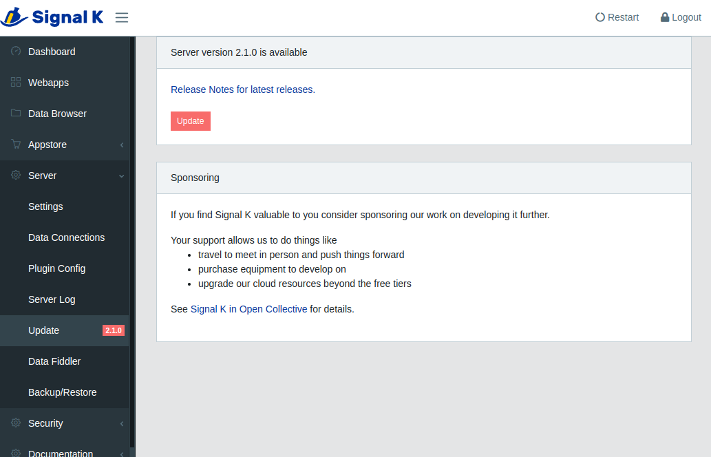

Updating your Installation
Signal K Server is frequently updated to introduce new features and fix issues that have been reported. Sometime these updates require that NodeJS or other supporting software on your device to be upgraded to support the new functionality.
Additionally your device's operating system are constantly evolving to address security issues as well as providing new capabilities.
Regularly updating your installation will reduce both the volume of data download and the time taken to complete the process. Connecting your device to a network with good broadband speed before performing an update is recommended.
Updates fall into four categories:
- Device Operating system (e.g. RaspberryPi OS)
- NodeJS / NPM
- Signal K Server
- Signal K WebApps and Plugins
Update Device Operating System
Instructions will vary depending on your device but for linux based systems such as the Raspberry Pi the following instrctions are used to update the OS.
From a terminal window enter the following commands:
sudo apt update
sudo apt dist-upgrade
If you have not performed an update for a while these commands may take a while to complete, just be patient and make sure everything completes correctly.
After the process has completed restart your device.
Update NodeJS and NPM
To ensure the version of NodeJS on your device is supported by Signal K Server (see prerequisites), check the installed version by entering the following in a terminal window:
node -v
# example response
v18.17.0
If the version of NodeJS displayed is lower than the version supported by Signal K Server then you can update it with the following command:
sudo apt upgrade nodejs
It is also recommended to update the version of the Node Package Manager (NPM).
sudo npm install -g npm@latest
Update Signal K Server
When an update is available for Signal K Server a visual indication is displayed in the Admin UI.
Important! Before updating please ensure the version of NodeJS on your device is supported by Signal K Server.
If you are updating from Signal K Server version v1.40.0 or earlier please read this first before proceeding.
Click on Server -> Update to display information about the new version.

Click Update to start the installation.
After the installation is complete, click Restart to launch the updated Signal K Server.
WebApps and Plugins
After updating Signal K Server some plugins and WebApps may also need to be updated.
The AppStore is where WebApps and Plugins can be installed, removed or updated. Those with an update available will be listed in Appstore -> Updates in the Admin UI.
Clicking on the download cloud button next to the WebApp / Plugin you wish to update.
After all installations have been completed, click Restart to activate the updated WebApps and Plugins.